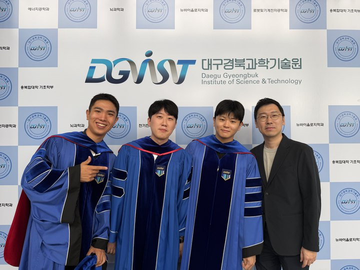
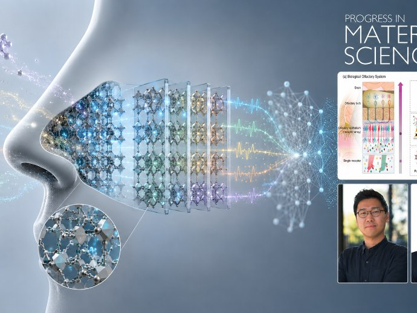
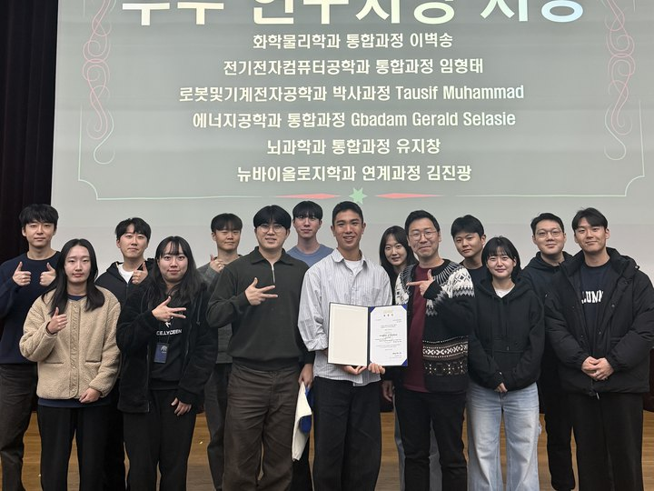
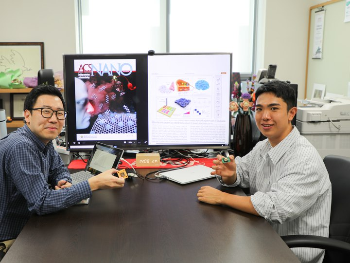
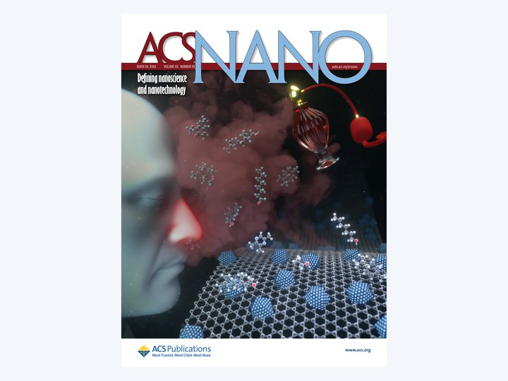
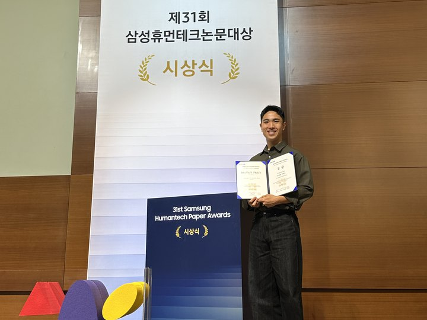
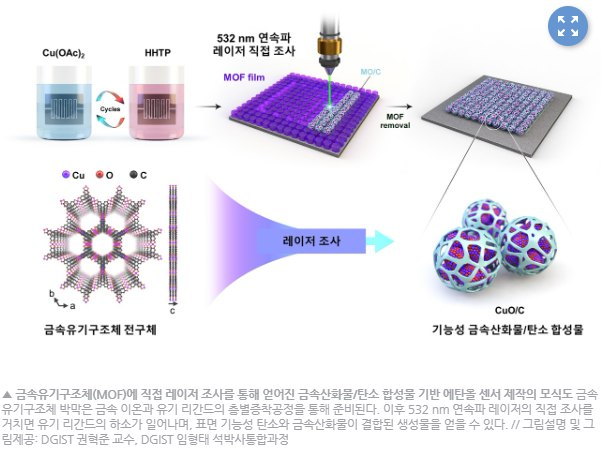
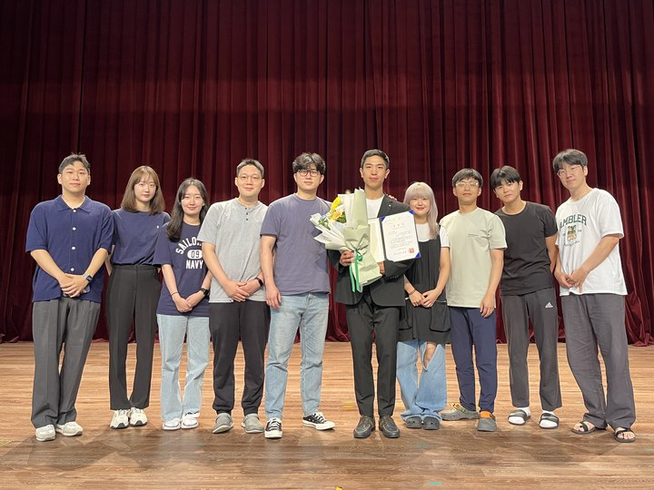
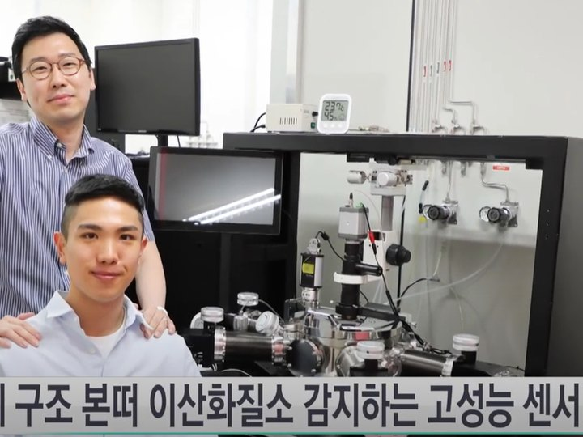

Honors & News
Honors and News
Honors & Awards
- Dec 2025Graduate School Outstanding Researcher AwardDGIST
- Oct 2025Next-Generation Engineering Researcher Excellence AwardInstitute for Promotion of Engineering and Science of Korea
- Feb 2025Samsung HumanTech Paper Award — Bronze Prize (Materials Science & Engineering)Samsung Electronics
- Sep 2023Best Student Award (1st Place)DGIST
- 2020 – 2025Soseon ScholarshipWOORITECH & Community Chest of Korea
News
2026
-
Dec 3, 2026
Oral presentation at the 2026 MRS Fall Meeting, Boston
Session NM02.11 (Graphene Sensors and Devices III), Dec 3, 11:45 am — laser-programmed chemical diversity in catalyst-embedded LIG arrays for artificial olfaction.
-
Aug 14, 2026
Ph.D. conferred by DGIST; started as InnoCORE Postdoctoral Fellow
Dissertation: Artificial Olfactory System Based on Chemiresistive Sensors with Highly Porous Materials.

-
Jul 13, 2026
Review in Progress in Materials Science covered by Phys.org and Korean media
Covered by Phys.org, Electronic Times, Asia Economy, Dong-A Science, Seoul Shinmun and Newsis.

-
Jun 27, 2026
Review published in Progress in Materials Science
Biomimetic artificial olfactory systems based on MOFs: from material design to intelligent pattern recognition.


2025
-
Dec 26, 2025
NeuroSense Co., Ltd. launched as a DGIST tech-in-kind spin-off
The company commercialises our laser-induced graphene electronic-nose technology; my patent KR 10-2024-0193844 is its in-kind technology contribution.
-
Dec 16, 2025
Graduate School Outstanding Researcher Award, DGIST

-
Nov 9, 2025
Triadic patent family filed in the US, Europe and Japan
Electronic nose comprising laser-induced graphene embedded with gas-activated nanoparticles.
-
Oct 31, 2025
Korean patent granted: LIG–MOF hybrid gas sensor (KR 10-2877233)
-
Oct 2025
Next-Generation Engineering Researcher Excellence Award
Institute for Promotion of Engineering and Science of Korea.
-
May 20, 2025
ACS Sensors paper selected for a supplementary cover
Laser oxidation + LSTM for odor classification (co-author).
-
May 2, 2025
CeLIG electronic nose featured on Phys.org and in Korean media
Phys.org: “AI-powered electronic nose detects diverse scents for health care and environmental applications”.

-
Apr 21, 2025
ACS Nano paper published and selected for a supplementary cover
Intelligent olfactory system utilizing in situ ceria nanoparticle-integrated laser-induced graphene.

-
Feb 12, 2025
Samsung HumanTech Paper Award — Bronze Prize
Materials Science & Engineering division, for the in situ nanocatalyst-integrated LIG electronic nose.



2024
-
Oct 11, 2024
Invited talk at ECS PRiME 2024, Honolulu
ppb-level NO2 monitoring using lung-inspired MOF on graphene hybrids.
-
Feb 29, 2024
Room-temperature ethanol sensor (Nano-Micro Letters) covered by Korean media
Chosun Biz, Dong-A Science, Yonhap News and Herald Economy.

-
Feb 9, 2024
Nano-Micro Letters paper published
Laser-induced and MOF-derived metal oxide/carbon composite for room-temperature ethanol sensing.

2023
-
Sep 6, 2023
Best Student Award (1st Place), DGIST

-
Jun 13, 2023
Lung-inspired NO2 sensor (Nature Communications) covered by YTN Science and Korean media
YTN Science, Electronic Times, Dong-A Science, Chosun Biz and others.

-
May 30, 2023
Nature Communications paper published
Semiconducting MOFs on UV laser-induced graphene with a hierarchical pore architecture for NO2 monitoring.